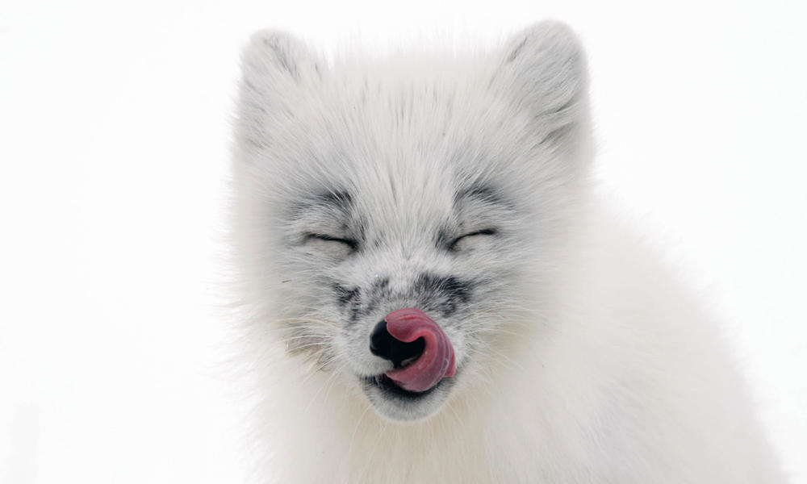
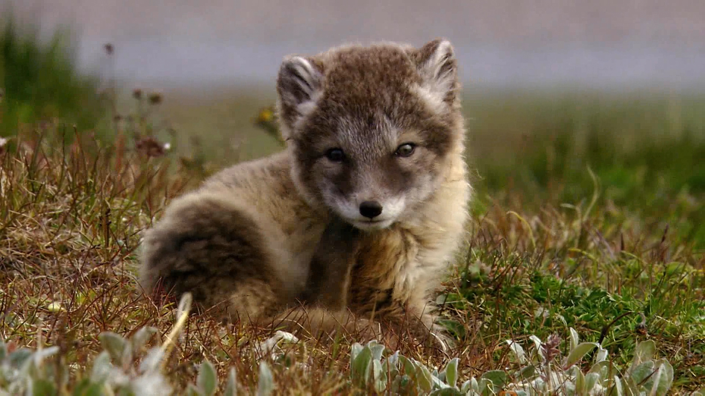
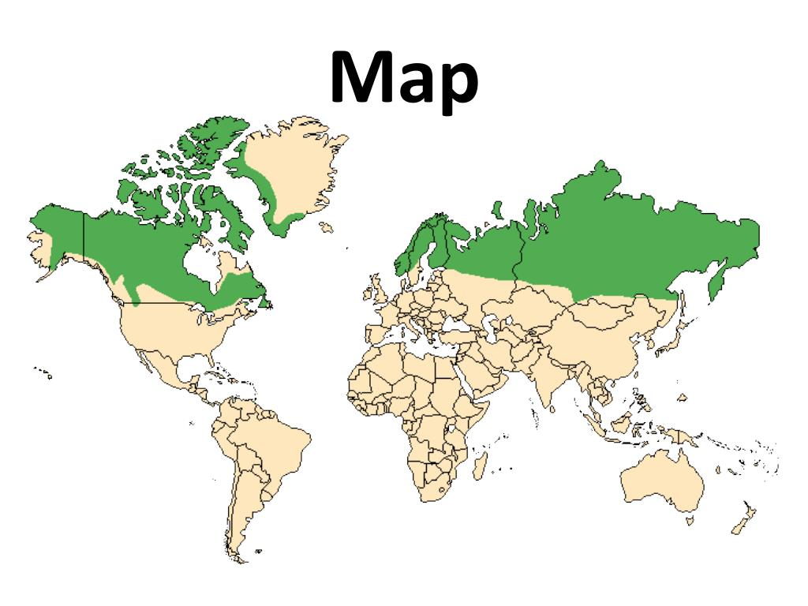
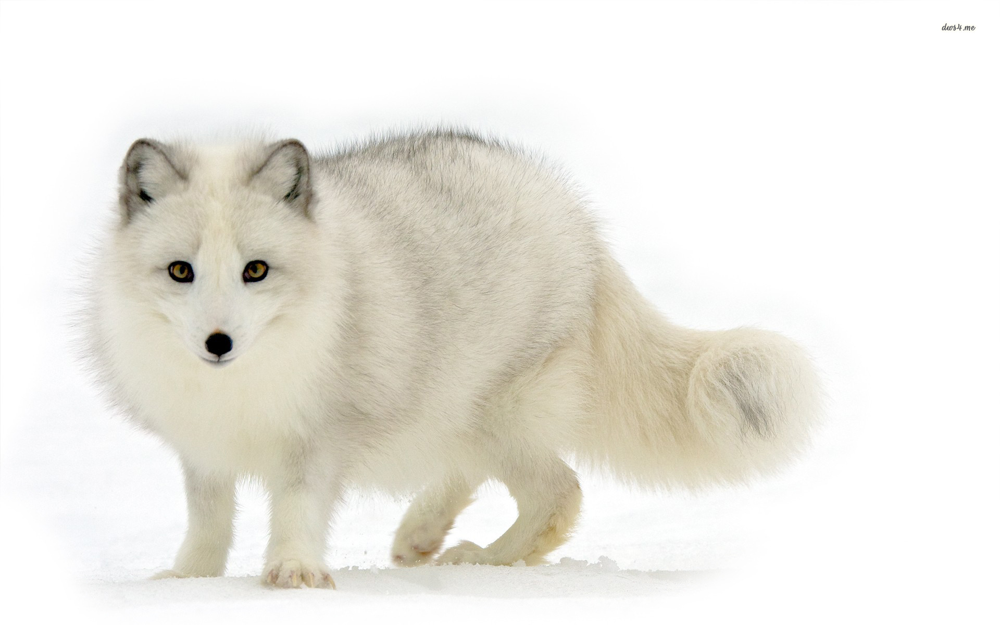
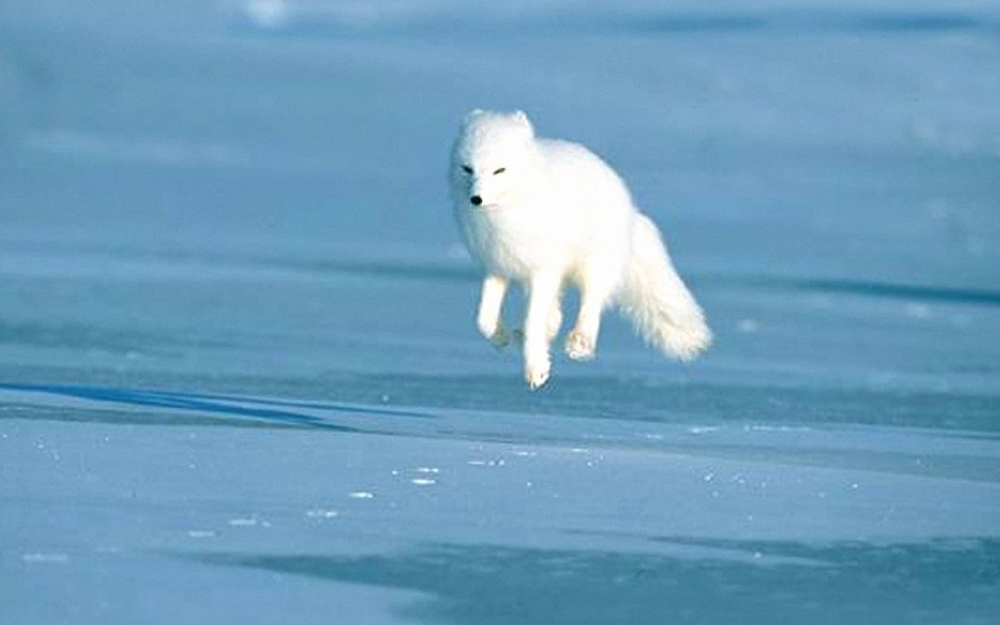
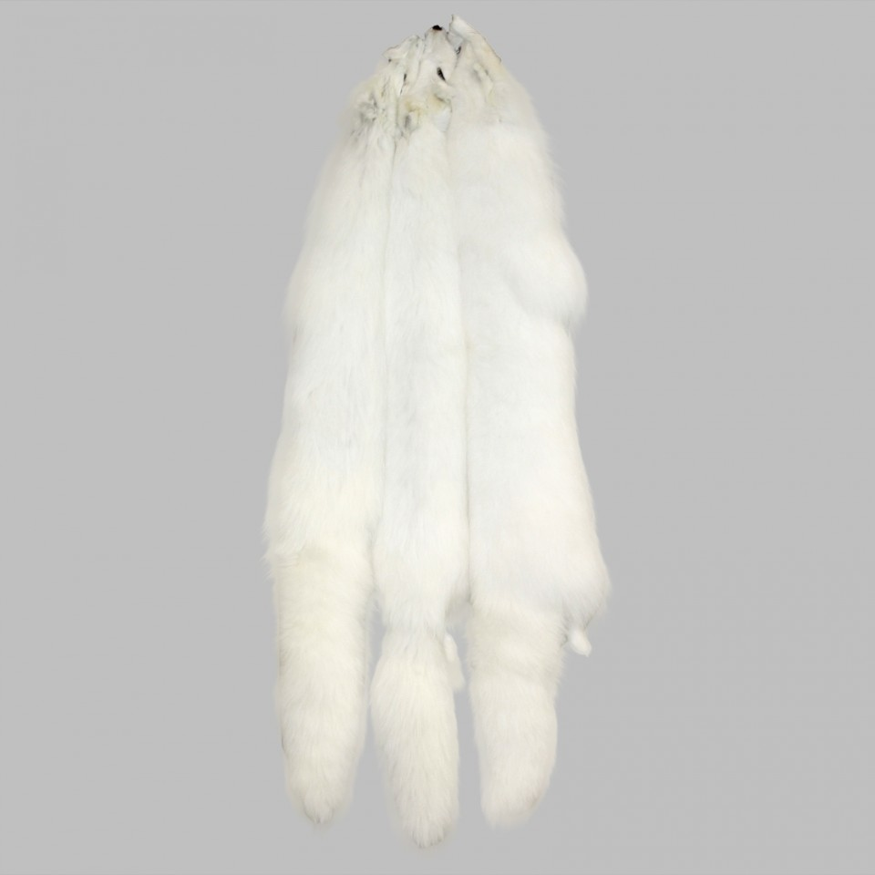

Description
The Arctic fox is a small fox native to the northern arctic region, specifically the arctic tundra. Tehir head to body length ranges from 18 to 27 inches. In addition the tail is about 12 inches long. There are sometimes differences in these numbers between males and females but it varies on the region. Their fur coats change with the seasons, being a clean white during the winter and a dark brown during the summer.
An image of an arctic fox licking its nose

Taxonomy
The Arctic fox, Vulpes lagopus, belongs in the Animalia Kingdom, Chordata Phylum, Mammalia Class, Carnivora Order, Canidae Family, and Vulpes Genus. In terms of the Vulpes Genus, and the subfamily Caninae, they are closest related to the Kit fox and least related to the Bat-eared fox.
An image of an arctic fox's coat during the summer

Ecology
The Arctic fox lives in the Arctic Tundra environment. This biome is in the northern areas of countries in the northern hemisphere. It encompasses the north pole and goes southmore into northern parts of Alaska, Canada, Russia, Greenland, Iceland, and Scandinavia, and parts of the taiga biome. The soil in the Arctic tundra is permafrosted, so very little plant life can actually thrive there. Plants like mossess, grasses, lichens, and dwarf shrubs call this place home. During the summer there is very little rainfall, making it as dry as some deserts even.
A map with highlighted areas, depicting where the Arctic fox lives.

Biology
The Arctic fox, throughout many years, is perfectly adapted for the Arctic tundra biome it lives in. It has a thick pelt, and stores fat during the colder months. During the winter its fur is a clean white, sometimes blue-grey, to match the snowy environment around itself. Compared to other foxes, it has short ears, short muzzles, and furry soles.
An image of an Arctic Fox in the middle of a hunt

Behavior
In the Arctic tundra, Arctic foxes are more towards the top of the food chain. They are predatory animals in the environment, only having to worry about bears and large birds. They hunt smaller mammals, like hares and rabbits, and small birds. They are tunneling animals, and will burrow under the snow in the event of a snowstorm.
An image of an arctic fox trotting across the ice

Human relationship
Arctic foxes are classified as "least concern" on the endagerment chart. They are sometimes hunted down my humans for sport and for their snow white pelts. Arctic foxes are not a domesticated animal, nor should they be. Foxes in general are not the best to have for pets. They have a mischevious personality and require patience and attention.
An image of a set of Arctic fox pelts